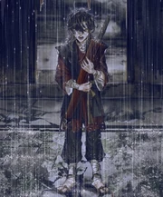
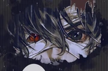

Будучи ребенком десяти лет ему на вид было не больше семи-восьми, он был маленький и очень худой. При этом голова его была неаккуратно перемотана повязками, через просвет в которых виднелся большой чёрный левый глаз. Так получалось, что при каждой встрече с Се Лянем, когда он не был замотан бинтами, то был избит или покрыт кровью, из-за чего его правый глаз никогда не был виден.
[Се Лянь] ласково улыбнулся и сказал:
— Доктора хотят осмотреть твои раны. Не бойся, отпусти ручки, хорошо?
В ответ ребёнок медренно помотал головой.
— Почему? — поинтересовался Се Лянь.
Малыш помолчал-помолчал какое-то время и наконец выпалил:
— Уродливый!
На самом деле у него была гетерохромия — один глаз черный, другой — красный. Из-за этого он подвергался постоянной травле и побоям. Хотя в новелле никогда не говорится об этом прямо, косвенно на это указывает красный глаз ятагана Эмина, также это подтверждено в интервью и изображено в маньхуа.
Через три года после вознесения Се Ляня Хунхунэр выглядел уже на 12-13 лет. Он носил старую грязную одежду, а лицо скрывали такие же перепачканные бинты. Лицо под бинтами было сплошь покрыто синяками и ссадинами — следами неоднократных побоев. Несмотря на маленький рост, силы в нём было хоть отбавляй. К моменту начала войны с Юнъанем он быстро и сильно вытянулся, хотя ему не было и 14 лет, он выглядел на 15-16
В какой-то момент времени в детстве самостоятельно набил татуировку на левом предплечье с непонятными символами, долго остававшимися неизвестными. Как выяснилось, это имя Се Ляня, но из-за безнадежно ужасного почерка его долгое время никто не мог прочесть
Когда после смерти юноша стал призраком и обрёл плоть, он предстал как молодой человек в опрятном воинском одеянии чёрного тона. На вид около 16-17 лет, довольно рослый, выше Се Ляня, однако всё ещё не растерявший некой юношеской незрелости. Чёрные волосы были забраны в хвост, на его поясе висел длинный ятаган. На лице носил белоснежную маску, а на маске — кривую улыбку